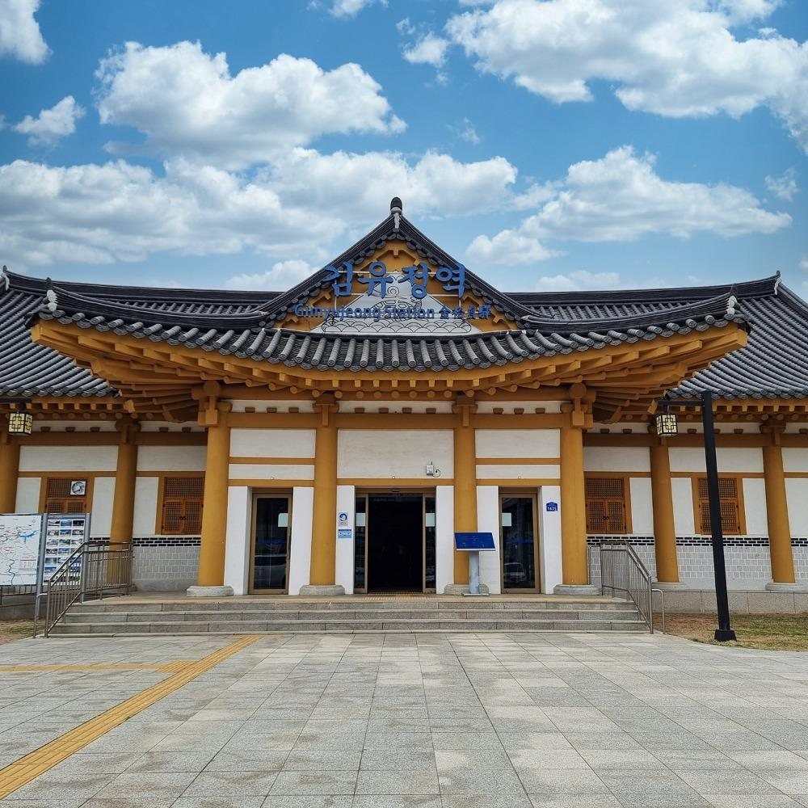

ESFP 추천 여행지
강원도 춘천

추천 이유
ESFP는 사람들과 함께 즐기며 다양한 경험을 하는 것을 좋아합니다. 춘천은 아름다운 자연경관과 감성적인 카페, 다양한 체험 활동을 함께 즐길 수 있는 여행지로 ESFP의 활발한 에너지와 잘 어울립니다.
추천 여행 코스
- 소양강 스카이워크
- 낭만골목 산책
- 김유정역 폐역 포토스팟
- 춘천중도물레길 체험
- 산토리니 카페 방문
추천 포인트
- 자연과 도시를 함께 즐길 수 있음
- 감성 카페와 포토 스팟이 풍부함
- 친구들과 함께하기 좋은 여행지
- 액티비티와 힐링을 동시에 경험 가능